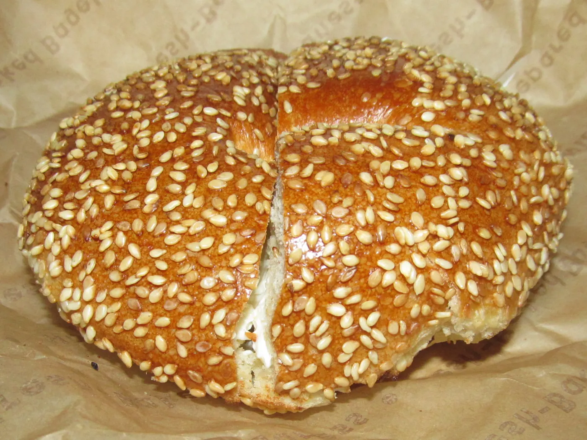
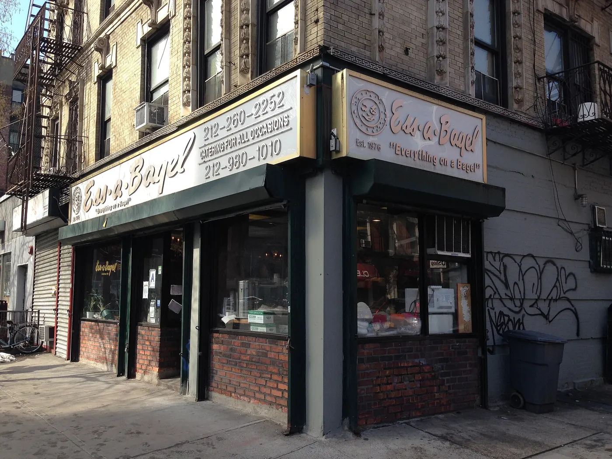

Le Bernardin
A tasting menu built on fish, served with enormous precision. Allow roughly $300 per person before wine, tax and tip.

New York's food is not one cuisine but a hundred neighbourhoods arguing about lunch. Here is what to order, what it costs, and where the city actually eats — from a $4.50 slice to a $365 tasting menu.
You can eat well in New York without chasing a single trend. The city's identity is in a short list of foods that are cheap, portable and perfected over decades.
A bagel is breakfast, a slice is lunch at 3pm, pastrami is a sit-down event, and dumplings are the reason you walk one more block in Chinatown. Prices below are typical in 2026, before tax and tip; menus move, so treat them as a guide rather than a promise.

These are the numbers to hold in your head. Anything far above them is usually paying for the room, not the food.
| Food | What it is | Typical price | Where to try it |
|---|---|---|---|
| Bagel with cream cheese | Hand-rolled, boiled, chewy, toasted only if you insist | $4.50–7 (classic about $5.50) | Ess-a-Bagel in Midtown East or near the Flatiron |
| Lox bagel | Bagel, cream cheese, cured salmon, capers and onion | $16–22 | Any old-school bagel shop with a fish counter |
| Plain slice | Large, thin, foldable, served on a paper plate | $4–5.50 | Joe's Pizza, Greenwich Village |
| 18-inch pie | A whole pizza to share, usually four to six slices each | $28–38 | Neighbourhood pizzerias, not the tourist strips |
| Pastrami on rye | Hand-cut, mustard, a pickle, a plastic tray | about $32–36 | Katz's Delicatessen, Lower East Side |
| Coffee | Drip or espresso, to stay or to walk with | $3.50–5 | Everywhere; the queue is a quality signal |
| Food-truck lunch | Rice bowl, kebab, tacos or a platter | $12–18 | Midtown office blocks, parks, weekday lunch |
| Sit-down dinner for two | Mid-range restaurant, two courses each, no drinks | $120–180 pre-tax (about $155–230 all-in) | Anywhere with tablecloths and neighbourhood regulars |
These are long-running, well-known spots rather than discoveries: reliable, fast, and priced for people who live here. A few have queues and most are informal.
| Place | Neighbourhood | Order this | Typical price |
|---|---|---|---|
| Joe's Pizza | Greenwich Village | A plain slice, eaten standing up | about $4.50 |
| Prince Street Pizza | SoHo | Pepperoni square | about $5.50 |
| Ess-a-Bagel | Midtown East / Flatiron | Bagel with cream cheese | $6–8 |
| Los Tacos No. 1 | Chelsea Market & Times Square | Two or three tacos | $5–6 each |
| Xi'an Famous Foods | Several locations | Cumin-lamb hand-pulled noodles | $12–15 |
| The Halal Guys | W 53rd & 6th | Chicken or gyro platter | $12–15 |
| Vanessa's Dumpling House | Lower East Side / Chinatown | Eight dumplings | about $7 |
| Gray's Papaya | Upper West Side | Recession Special (two dogs and a drink) | about $8 |
| Mamoun's Falafel | Greenwich Village | Falafel sandwich | $7–9 |
| Peter Pan Donuts | Greenpoint, Brooklyn | A doughnut and a coffee | about $5 |
New York's fine dining is genuinely world-class. Book as early as the restaurant allows and treat the price as the entry fee for a long evening.
A tasting menu built on fish, served with enormous precision. Allow roughly $300 per person before wine, tax and tip.
The city's most discussed tasting menu, now entirely plant-based. Expect around $365 per person before drinks.
Dry-aged porterhouse for two, sliced at the table. Roughly $150 for the steak alone; it is a Brooklyn institution, not a bargain.
Other names worth knowing: Carbone in Greenwich Village for a red-sauce revival, Keens Steakhouse for its mutton chop, and Balthazar in SoHo for the room as much as the food. All of them need a reservation, and none is a place to walk into on a Saturday at 8pm.
New York rewards travelling for food. Four neighbourhoods cover most of what the city does best, and each is a half-day out in its own right.
Take the 7 train to the end and eat Chinese food that bears no relation to what you get in Manhattan. Flushing is the city's best Chinese neighbourhood; Jackson Heights, around 74th Street, is the heart of Little India and one of the most linguistically diverse places on earth; Astoria carries Greek heritage and a strong café culture. Go hungry and order by pointing.
Brooklyn is where the city eats on a Sunday. Williamsburg and Greenpoint have bakeries, pizza and Peter Pan Donuts; Park Slope has the family-friendly restaurants and brownstone streets; Prospect Heights puts you near the museum and the park. Dinner at Peter Luger is the old-Brooklyn move.
The densest eating in Manhattan. Vanessa's Dumpling House for cheap dumplings, Katz's Delicatessen for the full pastrami ritual, and the bakeries and noodle shops along Grand and Mott streets. Come on a weekday if you can — the weekend crowds are real.
Little Italy survives here, not in Manhattan. The retail market is the anchor, with butchers, cheese counters and bakeries under one roof; Mike's Deli and Zero Otto Nove are the names to look for. Go at lunchtime, bring cash for the market stalls, and leave room for bread.
New York restaurant customs are consistent and easy to get right. The short version: tip properly, carry a little cash, and do not fight the queue.
18–22% is standard at a sit-down restaurant, and 20% is the safe middle. For taxis, 15–20%. Bag handlers get $2–5 a bag, bartenders $1–2 a drink, and hotel housekeeping $3–5 a night. Tipping is not included in the bill unless the menu says so, and the 8.875% sales tax is not a substitute for a tip.
Almost everywhere takes cards, including the cheap counters. A few old-school places and many market stalls still prefer cash, so carry $20–40 rather than relying entirely on your phone. Tipping jars at the counter are normal but optional.
A queue outside a small restaurant usually means it is good, not that it is slow. The exception is a queue that does not move because everyone is photographing the food. If the line is longer than 25 minutes at somewhere cheap, eat somewhere else and come back — New York has another excellent option within two blocks.
Book the splurge restaurants as early as they allow, and use Resy or OpenTable for the mid-range. Everything on the ten-spot list is walk-in. Restaurant Week runs late January to mid-February and mid-July to mid-August with prix-fixe menus at $30, $45 and $60 — a cheap way to try a restaurant that would otherwise be a stretch.

Bagels, pizza by the slice, pastrami on rye and cheesecake are the classics. The more useful answer is that New York is a city of immigrant cuisines: dumplings in Chinatown and Flushing, tacos, falafel, Greek food in Astoria and Italian-American cooking on Arthur Avenue.
Eating cheaply — bagel breakfast, slice or taco lunch, casual dinner — is roughly $45–70 a day. Our overall daily budget guide puts a budget trip at $130–200 per person excluding the hotel, with a mid-range food day closer to $80–120. A sit-down dinner for two mid-range runs about $120–180 pre-tax.
The slice is a format, not a cuisine: thin, wide, foldable and cheap. It is very good at its best and ordinary at its worst. Joe's Pizza in Greenwich Village and Prince Street Pizza in SoHo are reliable starting points; the average neighbourhood place is usually decent too.
Not required. At a counter where you order and collect your own food, a dollar in the jar or an optional tip on the screen is plenty. At a sit-down restaurant with table service, 18–22% is expected.
Almost everywhere. Indian food in Jackson Heights, falafel at Mamoun's, dumplings and noodle shops in Chinatown, and most Italian restaurants will feed you well. Eleven Madison Park is the city's most famous plant-based tasting menu if you want a splurge.
Food is the fastest way to understand how different the five boroughs are. Start with a borough guide, then build the trip around it.